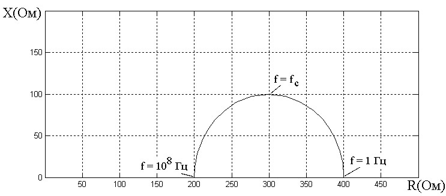

Теоретические сведения
1. Электрический импеданс
В последние годы измерения электрического импеданса широко используются для получения информации о внутренней структуре биологических тканей (определение уровня дегидратации организма человека, определение компонентного состава мышечной ткани, определение состояния клеточных структур).
Электрический импеданс – это комплексная величина, характеризующая электрические свойства биологического объекта при протека-нии через него электрического тока и определяемая, как отношение создаваемого на объекте напряжения к силе тока, протекающего в данном объекте. В общем виде, импеданс определяется по формуле:
Z(jω) = U(jω) / I(jω)
где: Z(jω) – электрический импеданс; U(jω) – напряжение; I(jω) – ток, протекающий в исследуемом объекте.
Величина, обратная электрическому импедансу, называется проводимостью биологического объекта или адмиттансом, где: Y(jω) – адмиттанс биологического объекта.
Y(jω) = I(jω) / U(jω)
В зарубежной литературе наряду с понятиями «импеданс» и «адмиттанс» используется также понятие «иммитанс», являющееся более общей характеристикой, как импеданса, так и адмитанса.
Электрический импеданс состоит из активного и реактивного и является комплексной величиной.
Z(jω) = R(jω) + jX(jω) = Re[Z(jω)] + jIm[Z(jω)]
где: R(ω) – активная составляющая импеданса (резистанс); Im(ω) – реактивная составляющая импеданса (реактанс).
2. Эквивалентные схемы
При исследовании биологических тканей значительная часть постоянного тока проходит по заполняющей межклетники жидкости, импеданс которой относительно мал. Кроме того, сечение межклеточных промежутков является непостоянной величиной.
При пропускании постоянного тока через живые клетки и ткани было установлено, что сила тока не остается постоянной, а сразу же после наложения потенциала начинает непрерывно падать и, наконец, устанавливается на уровне, который во много раз ниже, чем исходный. Это объясняется тем, что при прохождении постоянного тока через биологическую систему в ней возникает нарастающая до некоторого предела электродвижущая сила противоположного направления. В растворах электролитов наблюдаются аналогичные явления. Для них характерно явление поляризации, т.е. образование при прохождении постоянного тока дополнительных зарядов за счет накопления ионов обратного знака.
Для моделирования проведения тока живыми клетками прибегают к эквивалентным схемам, т.е. к таким комбинациям омического сопротивления и емкости, которые в первом приближении могут моделировать электрические параметры исследуемого объекта. На практике используются последовательные, параллельные и последовательно-параллельные схемы замещения биологических тканей.
Наиболее упрощенной является параллельная схема замещения, называемая также моделью Гельмгольца. В данной модели резистивные свойства биологической ткани представлены сопротивлением R, а емкостные – конденсатором С.
Рисунок 1 – Параллельная схема замещения
При моделировании электрического импеданса подкожных тканей наиболее оптимальным является использование последовательно-параллельной схемы замещения, получившей название модели Коула.
Рисунок 2 – Последовательно-параллельная схема замещения
Рисунок 3 – Схема Фрике-Морзе: R0 – сопротивление межклеточной
Рисунок 4 – Схема Шванна: R0 – сопротивление межклеточной жидкости; R – сопротивление содержимого клетки; Rm – сопротивление мембраны; С – емкость мембраны
При анализе электрического импеданса биологических жидкостей используются схема Фрике-Морзе и схема Шванна (рисунки 3 и 4).
Приведенные схемы в определенной степени могут служить моделями проведения тока живыми тканями. Однако, ни одна из них не может в точности воспроизводить закономерности, присущие сложным биологическим системам.
Частотные свойства импеданса в основном отображаются двумя способами. Для примера рассмотрим модель Коула (рисунок 2). Импеданс такой схемы является комплексной величиной и может быть записан в виде:
Z(jω) = Req(ω) + jXeq(ω)
где: Req(ω) и jXeq(ω) – эквивалентные активная и реактивная составляющие импеданса.
3. Зависимости параметров импеданса
Графики соответствующих зависимостей приведены на рисунке 5 (в данном примере Re=Ri=400 Ом, Cm=4 нФ). По горизонтальной оси отложены значения десятичного логарифма частоты, которая меняется от 1 Гц до 108 Гц. Величины Xeq и φ на самом деле отрицательные, и на графиках показаны их абсолютные величины. Стоит отметить, что влияние емкости, характеризуемое величинами Xeq и φ, стремится к нулю, как на низких, так и на высоких частотах.
Другой способ отображения частотных свойств электрического импеданса – диаграмма Весселя, называемая также графиком Найквиста и импедансным локусом, на которой отображаются пары значений Req, Xeq, получаемые при разных частотах. Для модели Фрике-Морзе при изменении частоты от нуля до бесконечности диаграмма Весселя имеет вид полуокружности (рисунок 6).

Рисунок 5 – Частотные зависимости параметров импеданса модели Фрике – Морзе
Точное определение сопротивления живых клеток и тканей сильно затруднено, из-за чувствительности их к действию электрического тока: у одних – в большей степени, например, у таких легко возбудимых тканей, как нервы и мышцы, у других – в меньшей степени. Этим вызвана необходимость использования в работе малого напряжения, что снижает точность наиболее часто используемого метода мультичастотного сканирования импеданса. Необходимо использование метода, позволяющего осуществлять тестирование биологического объекта в течение малого промежутка времени и позволяющего определить параметры электрического импеданса в широком диапазоне частот.
Рисунок 6 – Диаграмма Весселя для модели Фрике-Морзе
4. Обзор методов измерения электрического импеданса
Потенциометрический метод измерения электрического импеданса основан на измерении падения напряжения на исследуемом объекте в режиме заданного тестирующего тока. На рисунке 7а приведена упрощенная двухэлектродная схема измерения электрического импеданса на основе потенциометрического метода измерения. Напряжение с выхода генератора G преобразуется в электрический ток с помощью сопротивления R1 и поступает на исследуемый объект, имеющий электрический импеданс Zx.
Рисунок 7 – Двухэлектродная схема измерения электрического импеданса на основе потенциометрического метода измерения: а – с несимметричным выходом генератора, б – с симметричным выходом генератора
Падение напряжения на исследуемом объекте определится выражением:
UВЫХ = |Zx| UG / (R1 + |Zx|)K
где: |Zx| – модуль электрического импеданса объекта; UG – напряжение на выходе генератора; K – коэффициент усиления усилителя.
Основным недостатком схемы, приведенной на рисунке 7а является искажение показаний, если объект оказывается заземленным в другой точке, кроме электрода. В этом случае используется схема измерения электрического импеданса с симметричным выходом генератора (рисунок 7б). Вместо резистора R1 к выходам генератора подключаются два резистора ½ R1. Усилитель сигналов имеет симметричный вход. Кроме того, наличие симметричного входа позволяет исключить действие синфазных помех.
Другой разновидностью схем измерения электрического импеданса на основе потенциометрического метода измерения является схема, использующая в своей основе векторный измеритель (рисунок 8). Частота генератора может меняться в широких пределах с помощью переключателя диапазонов и ручки плавной настройки. Режим постоянного напряжения выбирается для импедансов, превышающих 1 кОм, а режим постоянного тока – для более низких значений.
Синусоидальный сигнал с генератора поступает на исследуемый объект Zх. Сигналы, несущие информацию о величине тока и напряжения в исследуемом объекте предварительно усиливаются усилителями. Амплитудный детектор определяет действующие величины тока и напряжения на исследуемом объекте.
На основании данных о величине тока и напряжения в исследуемом объекте рассчитывается модуль электрического импеданса исследуемого объекта. Фазовый детектор определяет разность фаз между напряжением и токов в исследуемом объекте. В соответствии с величиной фазового угла и модуля электрического импеданса исследуемого объекта определяются составляющие импеданса исследуемого объекта.
Рисунок 8 – Схема измерения электрического импеданса с помощью векторного измерителя
Рисунок 9 – Измерительная схема на основе линии с распределенными параметрами
Функция преобразования измерительного преобразователя на основе векторного измерителя аналогична функции преобразования двухэлектродного измерительного преобразователя, построенного на основе потенциометрического метода измерения.
При исследовании клеточных объектов и субклеточных структур импедансные свойства наиболее сильно проявляются в области частот порядка 106 – 109 Гц. В этих случаях используются измерительные схемы (рисунок 9), представляющие собой линию с распределенными параметрами, и исследования электрического импеданса осуществляются путем измерения соотношений между падающей и отраженной от исследуемого биологического объекта волны.
5. Резонансные методы измерения
Измерительные схемы биоэлектрического импеданса на основе резонансных методов измерения применяются главным образом на высоких частотах, так как на низких частотах резонансные явления выражены более слабо, вследствие чего точность измерения снижается.
Рисунок 10 – Схема измерения биоэлектрического импеданса резонансным методом
Принцип действия резонансного метода измерения параметров электрического импеданса поясняется схемой (рисунок 10). Схема измерения состоит из генератора высокой частоты (Г), измерительного колебательного контура (LC), включающего в себя образцовые индуктивность и емкость. Колебательный контур LC питается от измерительного генератора, частоту которого можно плавно изменять до тех пор, пока не наступит резонанс. Момент резонанса определяется по величине напряжения, а резонансная частота – по шкале генератора. Настройку контура в резонанс можно произвести и при фиксированной частоте генератора, изменением параметров колебательного контура.
В зависимости от того, какую составляющую импеданса исследуемого объекта требуется измерить, подключается либо образцовая индуктивность, либо емкость. Для определения активной составляющей к колебательному контуру подключается образцовое сопротивление.
Измерительные преобразователи электрического импеданса, построенные на основе резонансных методов, используются только на высоких частотах и, следовательно, их использование затруднено при определении электрического импеданса биологических сред в широком диапазоне частот.
6. Классификация методов измерения электрического импеданса
Таким образом, применительно к исследованиям электрических свойств биологических объектов, можно представить следующую классификацию методов измерения электрического импеданса.
Рисунок 11 – Классификация методов измерения электрического импеданса биологических тканей
Учитывая достоинства и недостатки различных методов измерения электрического импеданса, можно с уверенностью сделать вывод, что наиболее оптимальным и эффективным решением является использование метода импульсной импедансометрии. Этот метод зарекомендовал себя как один из самых прогрессивных и безопасных способов исследования электрических свойств биологических объектов.
Основным преимуществом импульсной импедансометрии является минимальное время воздействия электрическим током на исследуемый объект. Это особенно важно при работе с биологическими структурами, так как позволяет минимизировать возможное негативное влияние на ткани и клетки. Короткие импульсы тока обеспечивают высокую точность измерений, сохраняя при этом целостность и функциональность исследуемого материала.
7. Описание установки для изучения физических основ электрической импедансометрии
Рисунок 12 – Экспериментальная установка для изучения физических основ электрической импедансометрии
Данная установка позволяет познакомится с физическими основами электрической импедансометрии биологических тканей. Непосредственная задача при работе с ней - снять частотные зависимости полного сопротивления, то есть импеданса, нескольких Rc цепей, а именно:
- цепь с омическим сопротивлением
- цепь с конденсатором
- цепи с последовательным и параллельным соединением омического сопротивления и ёмкости
Необходимо снять частотную зависимости импеданса эквивалентной схемы биологического объекта.
Фактически, последняя цепь позволяет моделировать частотную зависимость электрического импеданса биологических тканей. Экспериментальная установка состоит из звукового генератора, из блока с исследуемыми электрическими цепями, а также лампового вольтметра. Звуковой генератор в данной работе служит источником переменного напряжения, с помощью него мы можем устанавливать требуемые частоту и амплитуду напряжения. Это переменное напряжение передается на вход системы, которая состоит из последовательно включённых известного сопротивления R0 и исследуемых цепей, каждая из которых подключается к измерительное схеме путём поворота центрального переключателя. Переключатель сверху имеет два положения: U1 и U2. В положении U1 измеряется напряжение на известном сопротивление R0, а в положении U2 измеряется напряжение на исследуемой цепи. Величины напряжений U1 и U2 измеряются с помощью лампового вольтметра. Для повышения точности измерений рекомендуется использовать экранированные кабели, чтобы минимизировать влияние внешних помех. Кроме того, перед началом экспериментов необходимо провести калибровку измерительной системы, чтобы исключить возможные погрешности, связанные с настройкой оборудования.